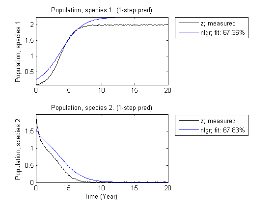
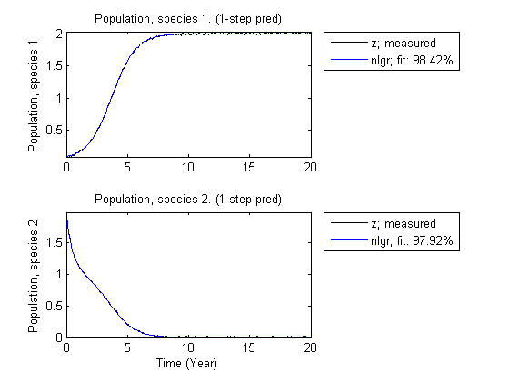
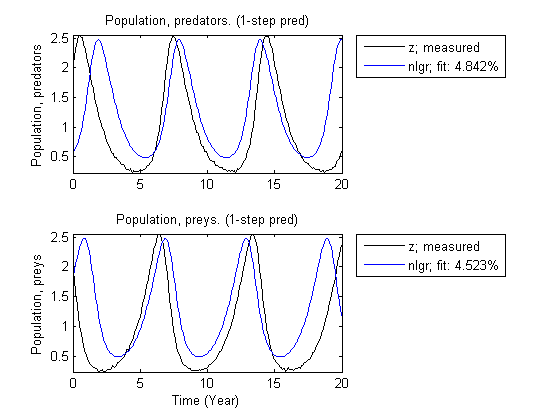
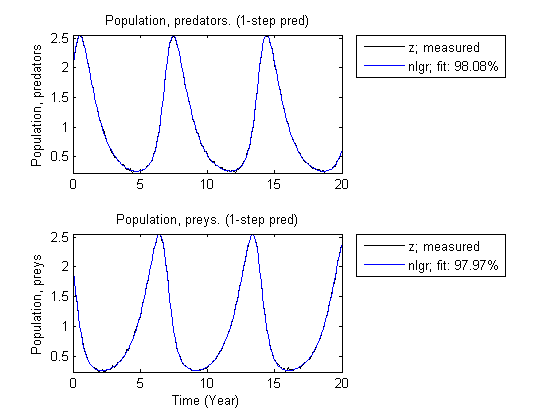
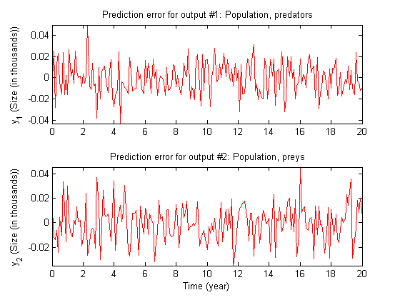
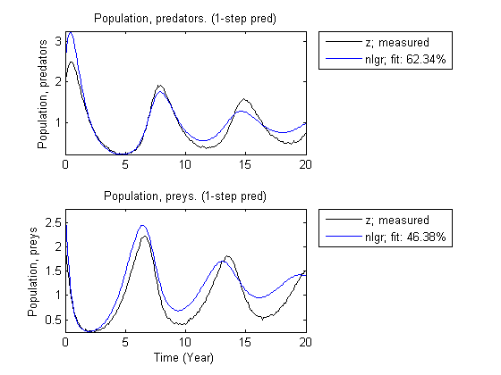
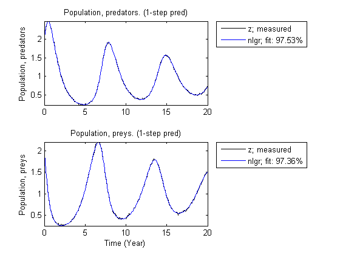

Three Ecological Population Systems: MATLAB and C MEX-File Modeling of Time-Series
In this demo we will study three idealized ecological systems where two species either:
- compete for the same food, or - are in a predator-prey situation.
One common feature of these examples is that the models do not include any inputs, i.e., the models are of so called time-series type. The demo illustrates IDNLGREY time-series modeling based on both m and C MEX-files.
Contents
- Ecological Population Systems
- A.1. Two Species that Compete for the Same Food
- A.2. Input-Output Data
- A.3. Performance of the Initial Two Species Model
- A.4. Parameter Estimation
- A.5. Performance of the Estimated Two Species Model
- B.1. A Classical Predator-Prey System
- B.2. Input-Output Data
- B.3. Performance of the Initial Classical Predator-Prey Model
- B.4. Parameter Estimation
- B.5. Performance of the Estimated Classical Predator-Prey Model
- C.1. A Predator-Prey System with Prey Crowding
- C.2. Input-Output Data
- C.3. Performance of the Initial Predator-Prey Model with Prey Crowding
- C.4. Parameter Estimation
- C.5. Performance of the Estimated Predator-Prey Model with Prey Crowding
- Conclusions
- Additional Information
Ecological Population Systems
In all three population systems investigated we are interesting in how the population of two species vary with time. To model this, let x1(t) and x2(t) denote the number of individuals of the respective species at time t. Let l1 and l2 denote the birth-rate associated with x1(t) and x2(t), respectively, both assumed to be constants over time. The death-rates of the species depend both on the availability of food and, if predators are present, on the risk of being eaten. Quite often (and in general), the death-rate for species i (i = 1 or 2) can be written a ui(x1(t), x2(t)), where ui(.) is some appropriate function. In practice, this means that ui(x1(t), x2(t))*xi(t) animals of species i dies every time unit. The net effect of these statements can be summarized in a state space type of model structure: (a time-series):
d -- x1(t) = l1*x1(t) - u1(x1(t), x2(t))*x1(t) dt
d -- x2(t) = l2*x2(t) - u2(x1(t), x2(t))*x2(t) dt
It is here natural to choose the two states as outputs, i.e., we let y1(t) = x1(t) and y2(t) = x2(t).
A.1. Two Species that Compete for the Same Food
In case two species compete for the same food, then it is the overall population of the species that controls the availability of food, and in turn of their death-rates. A simple yet common approach is to assume that the death-rate can be written as:
ui(x1(t), x2(t)) = gi + di*(x1(t) + x2(t))
for both species (i = 1 or 2), where gi and di are unknown parameters. Altogether this gives the state space structure:
d -- x1(t) = (l1-g1)*x1(t) - d1*(x1(t)+x2(t))*x1(t) dt
d -- x2(t) = (l2-g2)*x2(t) - d2*(x1(t)+x2(t))*x2(t) dt
An immediate problem with this structure is that l1, g1, l2, and g2 cannot be identified separately. We can only hope to identify p1 = l1-g1 and p3 = l2-g2. By also letting p2 = d1 and p4 = d2, one gets the reparameterized model structure:
d -- x1(t) = p1*x1(t) - p2*(x1(t)+x2(t))*x1(t) dt
d -- x2(t) = p3*x2(t) - p4*(x1(t)+x2(t))*x2(t) dt
y1(t) = x1(t)
y2(t) = x2(t)In this first population example we resort to MATLAB file modeling. The equations above are then entered into a MATLAB file, preys_m.m, with the following content.
function [dx, y] = preys_m(t, x, u, p1, p2, p3, p4, varargin) %PREYS_M Two species that compete for the same food.
% Output equations.
y = [x(1); ... % Prey species 1.
x(2) ... % Prey species 2.
]; % State equations.
dx = [p1*x(1)-p2*(x(1)+x(2))*x(1); ... % Prey species 1.
p3*x(2)-p4*(x(1)+x(2))*x(2) ... % Prey species 2.
];The MATLAB file, along with an initial parameter vector, an adequate initial state, and some administrative information are next fed as inputs to the IDNLGREY object constructor. Notice that the initial values of both the parameters and the initial states are specified as structure arrays with Npo (number of parameter objects = number of parameters if all parameters are scalars) and Nx (number of states) elements, respectively. Through these structure arrays it is possible to completely assign non-default property values (of 'Name', 'Unit', 'Value, 'Minimum', 'Maximum', and 'Fixed') to each parameter and initial state. Here we have assigned the 'Minimum' value of each initial state to zero (populations are positive!), and also specified that both initial states are to be estimated by default (in PEM).
FileName = 'preys_m'; % File describing the model structure. Order = [2 0 2]; % Model orders [ny nu nx]. Parameters = struct('Name', {'Survival factor, species 1' 'Death factor, species 1' ... 'Survival factor, species 2' 'Death factor, species 2'}, ... 'Unit', {'1/year' '1/year' '1/year' '1/year'}, ... 'Value', {1.8 0.8 1.2 0.8}, ... 'Minimum', {-Inf -Inf -Inf -Inf}, ... 'Maximum', {Inf Inf Inf Inf}, ... 'Fixed', {false false false false}); % Estimate all 4 parameters. InitialStates = struct('Name', {'Population, species 1' 'Population, species 2'}, ... 'Unit', {'Size (in thousands)' 'Size (in thousands)'}, ... 'Value', {0.2 1.8}, ... 'Minimum', {0 0}, ... 'Maximum', {Inf Inf}, ... 'Fixed', {false false}); % Estimate both initial states. Ts = 0; % Time-continuous system. nlgr = idnlgrey(FileName, Order, Parameters, InitialStates, Ts, ... 'Name', 'Two species competing for the same food', ... 'OutputName', {'Population, species 1' 'Population, species 2'}, ... 'OutputUnit', {'Size (in thousands)' 'Size (in thousands)'}, ... 'TimeUnit', 'year');
The PRESENT command can be used to view information about the initial model:
present(nlgr);
Time-continuous nonlinear state-space model defined by 'preys_m' (MATLAB file):
dx/dt = F(t, x(t), p1, ..., p4)
y(t) = H(t, x(t), p1, ..., p4) + e(t)
with 2 states, 2 outputs, and 4 free parameters (out of 4).
States: initial value
x(1) Population, species 1(t) [Size (in t..] xinit@exp1 0.2 (est) in [0, Inf]
x(2) Population, species 2(t) [Size (in t..] xinit@exp1 1.8 (est) in [0, Inf]
Outputs:
y(1) Population, species 1(t) [Size (in thousands)]
y(2) Population, species 2(t) [Size (in thousands)]
Parameters: value
p1 Survival factor, species 1 [1/year] 1.8 (est) in [-Inf, Inf]
p2 Death factor, species 1 [1/year] 0.8 (est) in [-Inf, Inf]
p3 Survival factor, species 2 [1/year] 1.2 (est) in [-Inf, Inf]
p4 Death factor, species 2 [1/year] 0.8 (est) in [-Inf, Inf]
Created: 29-Jun-2010 23:40:44
Last modified: 29-Jun-2010 23:40:44
A.2. Input-Output Data
We next load (simulated, though noise corrupted) data and create an IDDATA object describing one particular situation where two species compete for the same food. This data set contains 201 data samples covering 20 years of evolution.
load(fullfile(matlabroot, 'toolbox', 'ident', 'iddemos', 'data', 'preydata')); z = iddata(y, [], 0.1, 'Name', 'Two species competing for the same food'); set(z, 'OutputName', {'Population, species 1', 'Population, species 2'}, ... 'Tstart', 0, 'TimeUnit', 'Year');
A.3. Performance of the Initial Two Species Model
A simulation with the initial model clearly reveals that it cannot cope with the true population dynamics. See the plot figure. For a time-series type of IDNLGREY model notice that the model output is determined by the initial state.
figure; compare(z, nlgr, 1);
Figure 1: Comparison between true outputs and the simulated outputs of the initial two species model.
A.4. Parameter Estimation
In order to overcome the rather poor performance of the initial model we proceed to estimate the 4 unknown parameters and the 2 initial states using PEM. Notice that PEM from input number 3 and onwards accepts a list of property-value pairs; in this case 'Display' is set to 'Full', which means that certain PEM estimation information is displayed on the screen. Besides the assignable top level properties of an IDNLGREY model object (obtained via GET(nlgr)), it is also possible to specify the basic algorithm property values to use, i.e., 'SimulationOptions', 'GradientOptions' 'SearchMethod', 'MaxIter', 'Tolerance', 'LimitError', 'Display', and 'Advanced' can be specified in the property-value pair list passed to PEM.
nlgr = pem(z, nlgr, 'Display', 'Full');
Criterion: Trace minimization
Scheme: Trust-Region Reflective Newton (LSQNONLIN, LargeScale = 'On')
--------------------------------------------------------------
Norm of First-order
Iteration Cost step optimality
--------------------------------------------------------------
0 0.038848 - -
1 0.0119031 1.61 34.7
2 0.00017003 1.28 1.72
3 8.74641e-005 0.254 0.0887
4 8.71368e-005 0.0183 0.000945
5 8.71367e-005 0.000319 4.43e-006
--------------------------------------------------------------
A.5. Performance of the Estimated Two Species Model
The estimated values of the parameters and the initial states are well in line with those used to generate the true output data:
disp(' True Estimated parameter vector'); ptrue = [2; 1; 1; 1]; fprintf(' %6.3f %6.3f\n', [ptrue'; getpvec(nlgr)']); disp(' '); disp(' True Estimated initial states'); x0true = [0.1; 2]; fprintf(' %6.3f %6.3f\n', [x0true'; cell2mat(getinit(nlgr, 'Value'))']);
True Estimated parameter vector
2.000 2.004
1.000 1.002
1.000 1.018
1.000 1.010
True Estimated initial states
0.100 0.101
2.000 1.989
To further evaluate the quality of the model (and to illustrate the improvement compared to the initial model) we also simulate the estimated model. The simulated outputs are compared to the true outputs in a plot window. As can be seen, the estimated model is quite good.
figure; compare(z, nlgr, 1);
Figure 2: Comparison between true outputs and the simulated outputs of the estimated two species model.
PRESENT provides further information about the estimated model, e.g., about parameter uncertainties, and other estimation related quantities, like the loss function and Akaike's FPE (Final Prediction Error) measure.
present(nlgr);
Time-continuous nonlinear state-space model defined by 'preys_m' (MATLAB file):
dx/dt = F(t, x(t), p1, ..., p4)
y(t) = H(t, x(t), p1, ..., p4) + e(t)
with 2 states, 2 outputs, and 4 free parameters (out of 4).
States: initial value
x(1) Population, species 1(t) [Size (in t..] xinit@exp1 0.100729 (est) in [0, Inf]
x(2) Population, species 2(t) [Size (in t..] xinit@exp1 1.98855 (est) in [0, Inf]
Outputs:
y(1) Population, species 1(t) [Size (in thousands)]
y(2) Population, species 2(t) [Size (in thousands)]
Parameters: value standard dev
p1 Survival factor, species 1 [1/year] 2.00429 0.00633284 (est) in [-Inf, Inf]
p2 Death factor, species 1 [1/year] 1.00235 0.00335192 (est) in [-Inf, Inf]
p3 Survival factor, species 2 [1/year] 1.01779 0.0206521 (est) in [-Inf, Inf]
p4 Death factor, species 2 [1/year] 1.0102 0.0146565 (est) in [-Inf, Inf]
The model was estimated from the data set 'Two species competing for the same food', which
contains 201 data samples.
Loss function 7.29811e-009 and Akaike's FPE 7.58858e-009
Created: 29-Jun-2010 23:40:44
Last modified: 29-Jun-2010 23:40:52
B.1. A Classical Predator-Prey System
Assume now that the first species lives on the second one. The availability of food for species 1 is then proportional to x2(t) (the number of individuals of species 2), which means that the death-rate of species 1 decreases when x2(t) increases. This fact is captured by the simple expression:
u1(x1(t), x2(t)) = g1 - a1*x2(t)
where g1 and a1 are unknown parameters. Similarly, the death-rate of species 2 will increase when the number of individuals of the first species increases, e.g., according to:
u2(x1(t), x2(t)) = g2 + a2*x1(t)
where g2 and a2 are two more unknown parameters. Using the linear birth-rate assumed above one gets the state space structure:
d -- x1(t) = (l1-g1)*x1(t) + a1*x2(t)*x1(t) dt
d -- x2(t) = (l2-g2)*x2(t) - a2*x1(t)*x2(t) dt
As in the previous population example, it is also here impossible to uniquely identify the six individual parameters. With the same kind of reparameterization as in the above case, i.e., p1 = l1-g1, p2 = a1, p3 = l2-g2, and p4 = a2, the following model structure is obtained:
d -- x1(t) = p1*x1(t) + p2*x2(t)*x1(t) dt
d -- x2(t) = p3*x2(t) - p4*x1(t)*x2(t) dt
y1(t) = x1(t)
y2(t) = x2(t)which is better suited from an estimation point of view.
This time we enter this information into a C MEX-file named predprey1_c.c. The model file is structured as the standard IDNLGREY C MEX-file (see "Tutorials on Nonlinear Grey Box Model Identification: Creating IDNLGREY Model Files" or idnlgreydemo2), with the state and output update functions, compute_dx and compute_y, as follows.
void compute_dx(double *dx, double t, double *x, double **p,
const mxArray *auxvar)
{
/* Retrieve model parameters. */
double *p1, *p2, *p3, *p4;
p1 = p[0]; /* Survival factor, predators. */
p2 = p[1]; /* Death factor, predators. */
p3 = p[2]; /* Survival factor, preys. */
p4 = p[3]; /* Death factor, preys. */ /* x[0]: Predator species. */
/* x[1]: Prey species. */
dx[0] = p1[0]*x[0]+p2[0]*x[1]*x[0];
dx[1] = p3[0]*x[1]-p4[0]*x[0]*x[1];
} /* Output equations. */
void compute_y(double *y, double t, double *x, double **p,
const mxArray *auxvar)
{
/* y[0]: Predator species. */
/* y[1]: Prey species. */
y[0] = x[0];
y[1] = x[1];
}Since the model is of time-series type, neither compute_dx nor compute_y include u in the input argument list. In fact, the main interface function of predprey1_c.c, does not even declare u even though an empty u ([]) is always passed to predprey1_c by the IDNLGREY methods.
The compiled C MEX-file, along with an initial parameter vector, an adequate initial state, and some administrative information are next fed as input arguments to the IDNLGREY object constructor:
FileName = 'predprey1_c'; % File describing the model structure. Order = [2 0 2]; % Model orders [ny nu nx]. Parameters = struct('Name', {'Survival factor, predators' 'Death factor, predators' ... 'Survival factor, preys' 'Death factor, preys'}, ... 'Unit', {'1/year' '1/year' '1/year' '1/year'}, ... 'Value', {-1.1 0.9 1.1 0.9}, ... 'Minimum', {-Inf -Inf -Inf -Inf}, ... 'Maximum', {Inf Inf Inf Inf}, ... 'Fixed', {false false false false}); % Estimate all 4 parameters. InitialStates = struct('Name', {'Population, predators' 'Population, preys'}, ... 'Unit', {'Size (in thousands)' 'Size (in thousands)'}, ... 'Value', {1.8 1.8}, ... 'Minimum', {0 0}, ... 'Maximum', {Inf Inf}, ... 'Fixed', {false false}); % Estimate both initial states. Ts = 0; % Time-continuous system. nlgr = idnlgrey(FileName, Order, Parameters, InitialStates, Ts, ... 'Name', 'Classical 1 predator - 1 prey system', ... 'OutputName', {'Population, predators', 'Population, preys'}, ... 'OutputUnit', {'Size (in thousands)' 'Size (in thousands)'}, ... 'TimeUnit', 'year');
The predator prey model is next textually viewed via the PRESENT command.
present(nlgr);
Time-continuous nonlinear state-space model defined by 'predprey1_c' (MEX-file):
dx/dt = F(t, x(t), p1, ..., p4)
y(t) = H(t, x(t), p1, ..., p4) + e(t)
with 2 states, 2 outputs, and 4 free parameters (out of 4).
States: initial value
x(1) Population, predators(t) [Size (in t..] xinit@exp1 1.8 (est) in [0, Inf]
x(2) Population, preys(t) [Size (in t..] xinit@exp1 1.8 (est) in [0, Inf]
Outputs:
y(1) Population, predators(t) [Size (in thousands)]
y(2) Population, preys(t) [Size (in thousands)]
Parameters: value
p1 Survival factor, predators [1/year] -1.1 (est) in [-Inf, Inf]
p2 Death factor, predators [1/year] 0.9 (est) in [-Inf, Inf]
p3 Survival factor, preys [1/year] 1.1 (est) in [-Inf, Inf]
p4 Death factor, preys [1/year] 0.9 (est) in [-Inf, Inf]
Created: 29-Jun-2010 23:40:54
Last modified: 29-Jun-2010 23:40:54
B.2. Input-Output Data
Our next step is to load (simulated, though noise corrupted) data and create an IDDATA object describing this particular predator-prey situation. This data set also contains 201 data samples covering 20 years of evolution.
load(fullfile(matlabroot, 'toolbox', 'ident', 'iddemos', 'data', 'predprey1data')); z = iddata(y, [], 0.1, 'Name', 'Classical 1 predator - 1 prey system'); set(z, 'OutputName', {'Population, predators', 'Population, preys'}, ... 'Tstart', 0, 'TimeUnit', 'Year');
B.3. Performance of the Initial Classical Predator-Prey Model
A simulation with the initial model indicates that it cannot accurately cope with the true population dynamics. See the plot window.
figure; compare(z, nlgr, 1);
Figure 3: Comparison between true outputs and the simulated outputs of the initial classical predator-prey model.
B.4. Parameter Estimation
To improve the performance of the initial model we continue to estimate the 4 unknown parameters and the 2 initial states using PEM.
nlgr = pem(z, nlgr, 'Display', 'Full');
Criterion: Trace minimization
Scheme: Trust-Region Reflective Newton (LSQNONLIN, LargeScale = 'On')
--------------------------------------------------------------
Norm of First-order
Iteration Cost step optimality
--------------------------------------------------------------
0 0.900318 - -
1 0.575251 0.882 189
2 0.575251 5.62 189
3 0.467391 0.0702 214
4 0.309838 0.14 107
5 0.293176 0.281 410
6 0.170902 0.0702 64.3
7 0.132739 0.14 191
8 0.0732305 0.281 150
9 0.00368095 0.63 121
10 0.000237027 0.0515 3.76
11 0.00021913 0.0154 0.011
12 0.00021913 3.7e-005 0.000101
--------------------------------------------------------------
B.5. Performance of the Estimated Classical Predator-Prey Model
The estimated values of the parameters and initial states are very close to those that were used to generate the true output data:
disp(' True Estimated parameter vector'); ptrue = [-1; 1; 1; 1]; fprintf(' %6.3f %6.3f\n', [ptrue'; getpvec(nlgr)']); disp(' '); disp(' True Estimated initial states'); x0true = [2; 2]; fprintf(' %6.3f %6.3f\n', [x0true'; cell2mat(getinit(nlgr, 'Value'))']);
True Estimated parameter vector
-1.000 -1.000
1.000 1.000
1.000 1.000
1.000 0.999
True Estimated initial states
2.000 2.002
2.000 2.000
To further evaluate the model's quality (and to illustrate the improvement compared to the initial model) we also simulate the estimated model. The simulated outputs are compared to the true outputs in a plot window. As can be seen again, the estimated model is quite good.
figure; compare(z, nlgr, 1);
Figure 4: Comparison between true outputs and the simulated outputs of the estimated classical predator-prey model.
As expected, the prediction errors returned by PE are small and of a random nature.
figure; pe(z, nlgr);
Figure 5: Prediction errors obtained with the estimated IDNLGREY classical predator-prey model.
C.1. A Predator-Prey System with Prey Crowding
The last population study is also devoted to a 1 predator and 1 prey system, with the difference being that we here introduce a term -p5*x2(t)^2 representing retardation of prey growth due to crowding. The reparameterized model structure from the previous example is then just complemented with this crowding term:
d -- x1(t) = p1*x1(t) + p2*x2(t)*x1(t) dt
d -- x2(t) = p3*x2(t) - p4*x1(t)*x2(t) - p5*x2(t)^2 dt
y1(t) = x1(t)
y2(t) = x2(t)The interpretation of these equations is essentially the same as above, except that in the absence of predators the growth of the prey population will be kept at bay.
The new modeling situation is reflected by a C MEX-file called predprey2_c.c, which is almost the same as predprey1_c.c. Aside from changes related to the number of model parameters (5 instead of 4), the main difference lies in the state update function compute_dx:
/* State equations. */
void compute_dx(double *dx, double t, double *x, double **p,
const mxArray *auxvar)
{
/* Retrieve model parameters. */
double *p1, *p2, *p3, *p4, *p5;
p1 = p[0]; /* Survival factor, predators. */
p2 = p[1]; /* Death factor, predators. */
p3 = p[2]; /* Survival factor, preys. */
p4 = p[3]; /* Death factor, preys. */
p5 = p[4]; /* Crowding factor, preys. */ /* x[0]: Predator species. */
/* x[1]: Prey species. */
dx[0] = p1[0]*x[0]+p2[0]*x[1]*x[0];
dx[1] = p3[0]*x[1]-p4[0]*x[0]*x[1]-p5[0]*pow(x[1],2);
}Notice that the added retardation term is computed as p5[0]*pow(x[1],2). The power of function pow(., .) is defined in the C library math.h, which must be included at the top of the model file through the statement #include "math.h" (this is not necessary in predprey1_c.c as it only holds standard C mathematics).
The compiled C MEX-file, along with an initial parameter vector, an adequate initial state, and some administrative information are next fed as input arguments to the IDNLGREY object constructor:
FileName = 'predprey2_c'; % File describing the model structure. Order = [2 0 2]; % Model orders [ny nu nx]. Parameters = struct('Name', {'Survival factor, predators' 'Death factor, predators' ... 'Survival factor, preys' 'Death factor, preys' ... 'Crowding factor, preys'}, ... 'Unit', {'1/year' '1/year' '1/year' '1/year' '1/year'}, ... 'Value', {-1.1 0.9 1.1 0.9 0.2}, ... 'Minimum', {-Inf -Inf -Inf -Inf -Inf}, ... 'Maximum', {Inf Inf Inf Inf Inf}, ... 'Fixed', {false false false false false}); % Estimate all 5 parameters. InitialStates = struct('Name', {'Population, predators' 'Population, preys'}, ... 'Unit', {'Size (in thousands)' 'Size (in thousands)'}, ... 'Value', {1.8 1.8}, ... 'Minimum', {0 0}, ... 'Maximum', {Inf Inf}, ... 'Fixed', {false false}); % Estimate both initial states. Ts = 0; % Time-continuous system. nlgr = idnlgrey(FileName, Order, Parameters, InitialStates, Ts, ... 'Name', '1 predator - 1 prey system exhibiting crowding', ... 'OutputName', {'Population, predators', 'Population, preys'}, ... 'OutputUnit', {'Size (in thousands)' 'Size (in thousands)'}, ... 'TimeUnit', 'year');
By typing the name of the model object (nlgr) basic information about the model is displayed in the command window. Note that, as before, present(nlgr) provides a more comprehensive summary of the model.
nlgr
Time-continuous nonlinear state-space model defined by 'predprey2_c' (MEX-file):
dx/dt = F(t, x(t), p1, ..., p5)
y(t) = H(t, x(t), p1, ..., p5) + e(t)
with 2 states, 2 outputs, and 5 free parameters (out of 5).
C.2. Input-Output Data
Next we load (simulated, though noise corrupted) data and create an IDDATA object describing this crowding type of predator-prey situation. This data set contains 201 data samples covering 20 years of evolution.
load(fullfile(matlabroot, 'toolbox', 'ident', 'iddemos', 'data', 'predprey2data')); z = iddata(y, [], 0.1, 'Name', '1 predator - 1 prey system exhibiting crowding'); set(z, 'OutputName', {'Population, predators', 'Population, preys'}, ... 'Tstart', 0, 'TimeUnit', 'Year');
C.3. Performance of the Initial Predator-Prey Model with Prey Crowding
A simulation with the initial model clearly shows that it cannot cope with the true population dynamics. See the figure.
figure; compare(z, nlgr, 1);
Figure 6: Comparison between true outputs and the simulated outputs of the initial predator-prey model with prey crowding.
C.4. Parameter Estimation
To improve the performance of the initial model we proceed to estimate the 5 unknown parameters and the 2 initial states.
nlgr = pem(z, nlgr, 'Display', 'Full');
Criterion: Trace minimization
Scheme: Trust-Region Reflective Newton (LSQNONLIN, LargeScale = 'On')
--------------------------------------------------------------
Norm of First-order
Iteration Cost step optimality
--------------------------------------------------------------
0 0.166046 - -
1 0.166046 0.566 161
2 0.0991104 0.142 138
3 0.0480006 0.142 125
4 0.0242517 0.236 191
5 0.00157119 0.108 31.1
6 0.000204068 0.0808 1.04
7 0.000201151 0.00116 0.00573
8 0.000201151 4.3e-005 3.54e-005
--------------------------------------------------------------
C.5. Performance of the Estimated Predator-Prey Model with Prey Crowding
The estimated values of the parameters and the initial states are again quite close to those that were used to generate the true output data:
disp(' True Estimated parameter vector'); ptrue = [-1; 1; 1; 1; 0.1]; fprintf(' %6.3f %6.3f\n', [ptrue'; getpvec(nlgr)']); disp(' '); disp(' True Estimated initial states'); x0true = [2; 2]; fprintf(' %6.3f %6.3f\n', [x0true'; cell2mat(getinit(nlgr, 'Value'))']);
True Estimated parameter vector
-1.000 -1.000
1.000 1.001
1.000 1.002
1.000 1.002
0.100 0.101
True Estimated initial states
2.000 2.003
2.000 2.002
To further evaluate the quality of the model (and to illustrate the improvement compared to the initial model) we also simulate the estimated model. The simulated outputs are compared to the true outputs in a plot window. As can be seen again, the estimated model is quite good.
figure; compare(z, nlgr, 1);
Figure 7: Comparison between true outputs and the simulated outputs of the estimated predator-prey model with prey crowding.
We conclude the third population example by presenting the model information returned by PRESENT.
present(nlgr);
Time-continuous nonlinear state-space model defined by 'predprey2_c' (MEX-file):
dx/dt = F(t, x(t), p1, ..., p5)
y(t) = H(t, x(t), p1, ..., p5) + e(t)
with 2 states, 2 outputs, and 5 free parameters (out of 5).
States: initial value
x(1) Population, predators(t) [Size (in t..] xinit@exp1 2.00281 (est) in [0, Inf]
x(2) Population, preys(t) [Size (in t..] xinit@exp1 2.00224 (est) in [0, Inf]
Outputs:
y(1) Population, predators(t) [Size (in thousands)]
y(2) Population, preys(t) [Size (in thousands)]
Parameters: value standard dev
p1 Survival factor, predators [1/year] -0.999914 0.0027844 (est) in [-Inf, Inf]
p2 Death factor, predators [1/year] 1.00058 0.00272088 (est) in [-Inf, Inf]
p3 Survival factor, preys [1/year] 1.0019 0.00257756 (est) in [-Inf, Inf]
p4 Death factor, preys [1/year] 1.00224 0.00258236 (est) in [-Inf, Inf]
p5 Crowding factor, preys [1/year] 0.101331 0.000391349 (est) in [-Inf, Inf]
The model was estimated from the data set '1 predator - 1 prey system exhibiting crowding', which
contains 201 data samples.
Loss function 4.03587e-008 and Akaike's FPE 4.23666e-008
Created: 29-Jun-2010 23:41:00
Last modified: 29-Jun-2010 23:41:03
Conclusions
This demo has illustrated how to perform IDNLGREY time-series modeling based on m as well as C-MEX model files.
Additional Information
For more information on identification of dynamic systems with System Identification Toolbox™ visit the System Identification Toolbox product information page.